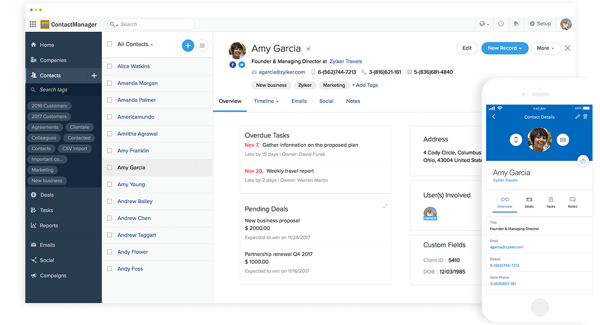
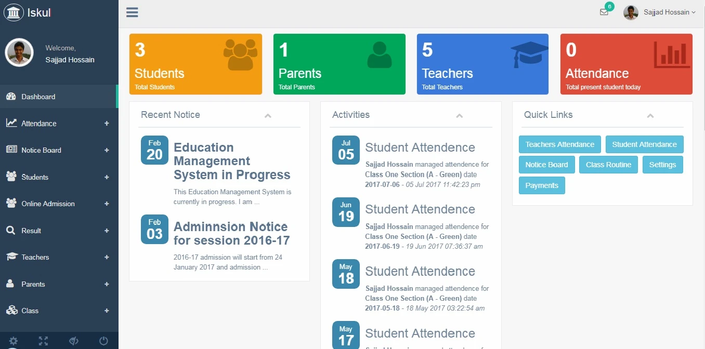

Candy Crush Game

Description: The Candy Crush project is a simplified version of the popular match-three puzzle video game. It is written in C++ and implements basic game mechanics and user interaction.
Functionalities:
- Display a grid of candies with different colors and shapes.
- Allow the player to swap adjacent candies to create matches of three or more candies of the same color, horizontally or vertically.
- When a match is made, remove the matched candies from the grid and replace them with new candies falling from above.
- Keep track of the player's score based on the number of matches made.
- Implement basic game logic to determine when the game is over (e.g., no more moves available).
- Provide a user-friendly interface for gameplay, including buttons for starting a new game and viewing high scores.
Technologies Used: C++, SFML (Simple and Fast Multimedia Library)
Contact Management System
Description: The Contact Management System project is an object-oriented program written in C++. It allows users to store, retrieve, and manage their contacts efficiently.
Functionalities:
- Store contact information, including name, phone number, email address, and additional notes.
- Provide options to add, edit, and delete contacts.
- Search for contacts based on name, phone number, or email address.
- Display contacts in a user-friendly interface with sorting and filtering options.
Technologies Used: C++, Object-Oriented Programming
Student Management System
Description: The Student Management System project is developed in C# Windows Forms and utilizes Oracle 11g as the backend database management system. It is designed to manage student information in a school or educational institution.
Functionalities:
- Store student information, including name, roll number, course details, and grades.
- Allow administrators to add, edit, and delete student records.
- Generate reports and statistics based on student data.
- Manage course details, including course name, instructor, and schedule.
Technologies Used: C# Windows Forms, Oracle 11g